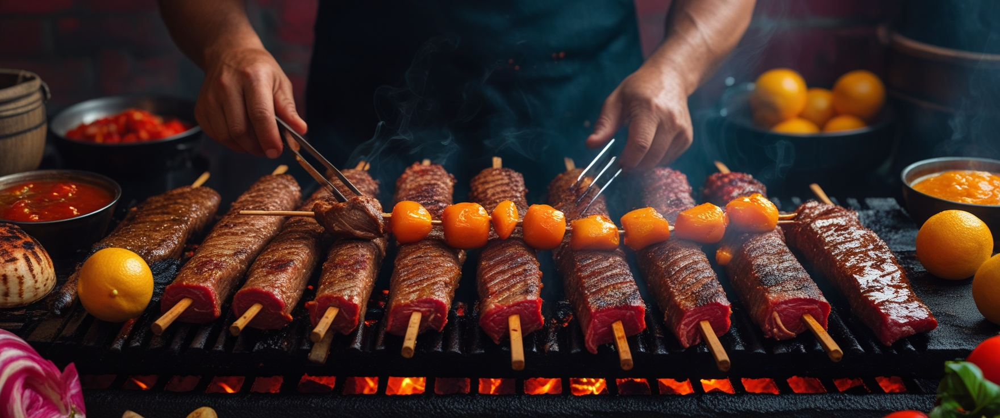
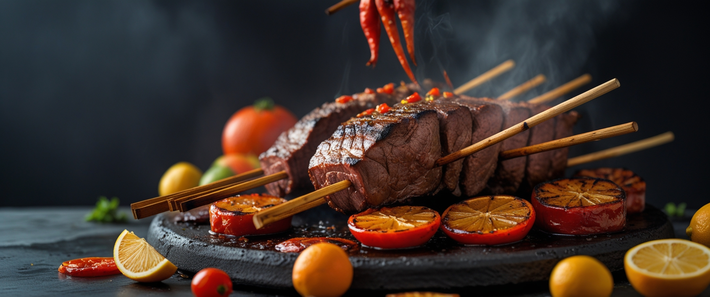

Ofrecer experiencias gastronomicas unicas a traves de asados al barril, preparados con tradicion familiar, calidad y sabor casero, en un ambiente familiar y acogedor, que resalte los valores de la cocina Colombiana y el compartir en familia.
Ser conocidos a nivel nacional como el restaurante familiar lider en asados al barril, destacando por nuestra exelencia en sabor, atencion al cliente y un a,biente calido que invite a volver, creciendo con raices firmes y sabor autentico.
En Brasas y Barriles Quintero, te invitamos a un viaje de sabores auténticos, donde la
tradición y la pasión se encuentran en cada plato. Más que un simple restaurante, somos un espacio de
encuentro, una celebración de la buena mesa y la compañía.
Nuestra historia comenzó con una idea sencilla: honrar el arte de la parrilla y la maestría de la buena
bebida. Desde las brasas ardientes que dan vida a nuestras carnes de alta calidad, hasta los barriles de
madera que guardan nuestros licores y vinos, cada elemento en nuestro restaurante está elegido con
cuidado para ofrecerte una experiencia inolvidable.
Nos especializamos en cortes de carne a la parrilla, cocinados a la perfección para resaltar su sabor
natural. Además, nuestra selección de acompañamientos y postres caseros complementa a la perfección
nuestra oferta. Creemos firmemente que la mejor comida es la que se comparte, y por eso hemos creado un
ambiente cálido y acogedor, perfecto para una cena familiar, una celebración con amigos o una cita
especial.
En Brasas y Barriles Quintero, cada bocado es un recuerdo y cada visita es una historia. Ven y sé parte
de la nuestra.